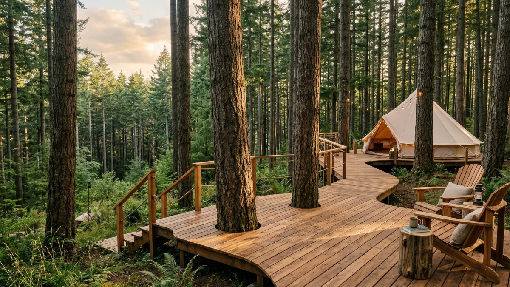

Daftar Isi
Jawaban Singkat: Wisata offroad Batu Malang adalah aktivitas menjelajahi medan pegunungan menggunakan jeep 4x4 di kawasan Coban Talun, Coban Rondo, dan Coban Putri, dengan kisaran harga mulai dari sekitar Rp195.000 per orang hingga di atas Rp850.000 per jeep tergantung rute dan durasi.
- Rute utama tersebar di kawasan Bumiaji, Oro-Oro Ombo, dan sekitar Coban Talun, Kota Batu.
- Harga paket bervariasi tergantung apakah dihitung per orang atau sewa jeep penuh.
- Durasi trek pendek umumnya 2-3 jam, sedangkan trek panjang bisa mencapai 6-7 jam.
- Kapasitas jeep umumnya 3-5 orang, menggunakan armada Jimny, Willys, atau Taft 4x4.
- Aktivitas ini cocok untuk keluarga, rombongan gathering perusahaan, maupun individu pencari adrenalin.
Kota Batu di Jawa Timur dikenal sebagai salah satu tujuan wisata alam paling populer di Indonesia, dan wisata offroad menjadi salah satu daya tarik yang terus berkembang di kawasan ini. Wisatawan diajak menyusuri jalur berbatu, tanjakan curam, hingga aliran sungai kecil menggunakan jeep 4x4 yang dikendalikan pengemudi berpengalaman.
Apa Itu Wisata Offroad Batu Malang?
Jawaban singkat: Wisata offroad Batu Malang adalah kegiatan berkendara menggunakan jeep 4x4 melintasi medan berat seperti hutan pinus, perkebunan, dan jalur sungai di kawasan pegunungan Batu, dipandu oleh sopir lokal berpengalaman.
Aktivitas ini menggabungkan sensasi petualangan dengan keindahan alam pegunungan Malang Raya. Wisatawan duduk di dalam jeep terbuka atau setengah terbuka, melintasi medan yang tidak bisa dilalui kendaraan biasa, sambil menikmati pemandangan kebun apel, hutan pinus, dan air terjun di sepanjang perjalanan.
Wisata ini berbeda dari city tour biasa karena fokus utamanya adalah tantangan medan dan interaksi langsung dengan alam terbuka. Jalur off-road Budug Asu menawarkan medan berupa kombinasi jalan berbatu, tanjakan curam, dan segmen berlumpur yang membutuhkan kendaraan jeep 4x4 dan pengemudi berpengalaman, sementara Coban Talun menghadirkan variasi medan berbeda dengan fokus jalur hutan dan lembah.
Mengapa Wisata Offroad Batu Malang Semakin Diminati?
Jawaban singkat: Minat terhadap wisata offroad di Batu meningkat karena tren wisata outdoor dan adventure yang terus tumbuh, didukung akses lokasi yang relatif mudah dari pusat Kota Batu dan Malang.
Berdasarkan data yang dihimpun dari operator wisata setempat yang mengutip data Dinas Pariwisata Kota Batu, lebih dari 2 juta wisatawan mengunjungi Kota Batu setiap tahunnya, menjadikannya salah satu pusat wisata utama di Indonesia, dengan jumlah wisatawan yang memilih aktivitas outdoor, termasuk wisata offroad, meningkat lebih dari 30% dalam beberapa tahun terakhir. Tren ini sejalan dengan pergeseran preferensi wisatawan dari destinasi konvensional ke pengalaman yang lebih aktif dan menantang.
Beberapa faktor pendorong lain meliputi kemudahan akses, ketersediaan banyak operator jeep lokal, serta variasi rute yang bisa disesuaikan dengan tingkat pengalaman peserta, mulai dari pemula hingga pencari tantangan berat.
Rute Mana Saja yang Paling Direkomendasikan?
Jawaban singkat: Rute paling populer di kawasan wisata offroad Batu Malang meliputi Coban Talun, Coban Rondo, Coban Putri, dan jalur Budug Asu, masing-masing menawarkan karakter medan dan pemandangan yang berbeda.
Berikut gambaran umum beberapa rute favorit:
- Coban Talun, berlokasi di Tulungrejo, Bumiaji, Kota Batu, terkenal dengan air terjun setinggi sekitar 50-60 meter dan rute yang cukup terjal, sehingga cocok digunakan sebagai jalur offroad.
- Coban Rondo, menyusuri jalur menuju air terjun sambil melewati kawasan hutan yang rimbun, cocok untuk trekking tambahan setelah offroad.
- Coban Putri, berlokasi di Jalur Lingkar Barat, Oro-Oro Ombo, Batu, dikenal dengan pemandangan alam yang indah serta paket yang biasanya sudah mencakup fasilitas tambahan.
- Budug Asu, menjadi pilihan bagi wisatawan yang mencari tantangan lebih berat karena kombinasi jalan berbatu, tanjakan curam, dan segmen berlumpur.
Pemilihan rute sebaiknya disesuaikan dengan pengalaman peserta dan waktu yang tersedia. Trek pendek cocok untuk keluarga dengan anak-anak, sedangkan trek panjang lebih sesuai untuk kelompok yang mencari sensasi lebih menantang.

Liburan Seru Bareng Circle Kamu!
Booking paket offroad lengkap kami. Nikmati momen tak terlupakan menyusuri alam Batu.
Chat Admin SekarangBerapa Kisaran Harga Wisata Offroad Batu Malang?
Jawaban singkat: Harga wisata offroad Batu Malang bervariasi mulai dari sekitar Rp195.000 per orang untuk paket dasar hingga Rp600.000-Rp850.000 per jeep untuk trek panjang, tergantung fasilitas dan durasi.
Sebagai gambaran, salah satu operator offroad Batu menawarkan paket dengan tiket masuk, rute pendek, driver dan BBM, guide, atraksi air, jalur sungai, dan makan siang mulai dari Rp195.000 per pax, sementara paket rute panjang 3-5 jam dengan fasilitas tambahan seperti dokumentasi berada di kisaran harga lebih tinggi. Di sisi lain, operator lain di kawasan Coban Talun menetapkan harga sekitar Rp600.000 per jeep untuk trek pendek dan Rp850.000 per jeep untuk trek panjang, dengan kapasitas maksimal tiga orang per jeep.
Perbedaan harga ini umumnya dipengaruhi oleh durasi trek, jumlah fasilitas yang disertakan seperti dokumentasi dan konsumsi, serta jenis armada yang digunakan.

Pemandangan alam hutan pinus yang bisa Anda nikmati selama perjalanan wisata offroad.
Apa Saja Manfaat Mengikuti Wisata Offroad?
Jawaban singkat: Wisata offroad memberikan manfaat berupa relaksasi di alam terbuka, penguatan hubungan sosial dalam kelompok, serta rasa pencapaian setelah menaklukkan medan yang menantang.
Beberapa manfaat yang umum dirasakan wisatawan meliputi:
- Menyegarkan pikiran melalui aktivitas fisik dan udara pegunungan yang sejuk.
- Mempererat hubungan keluarga, teman, atau rekan kerja melalui pengalaman berkelompok.
- Memberikan variasi liburan yang berbeda dari wisata konvensional seperti taman hiburan.
- Cocok dijadikan agenda team building atau family gathering karena sifatnya yang kolaboratif.
Kesalahan Umum yang Perlu Dihindari Wisatawan
Jawaban singkat: Kesalahan yang paling sering terjadi adalah tidak memesan jadwal lebih awal, memilih rute tanpa mempertimbangkan kondisi fisik peserta, serta mengabaikan perlengkapan dasar seperti alas kaki tertutup dan pakaian yang sesuai.
Wisatawan sering menganggap seluruh rute memiliki tingkat kesulitan sama, padahal setiap jalur memiliki karakter medan berbeda. Selain itu, datang tanpa reservasi pada musim liburan berisiko kehabisan slot, mengingat operator biasanya membatasi jumlah trip per hari demi menjaga kualitas layanan dan keamanan.
Apa yang Membedakan Setiap Operator Offroad di Batu Malang?
Jawaban singkat: Perbedaan utama antar operator offroad Batu Malang terletak pada jenis armada, cakupan fasilitas dalam paket, titik penjemputan, dan area rute yang dikuasai, seperti Coban Talun, Coban Putri, atau jalur kombinasi.
Sebagian operator berfokus pada satu kawasan seperti Coban Talun dengan penawaran spesialis jalur sungai dan hutan pinus, sementara operator lain menyediakan paket kombinasi yang menggabungkan offroad dengan aktivitas tambahan seperti outbound, camping, atau kunjungan ke destinasi sekitar seperti kebun apel dan taman bunga. Memilih operator sebaiknya mempertimbangkan reputasi, kelengkapan fasilitas keselamatan, dan kejelasan rincian paket sebelum melakukan pemesanan.
Kesimpulan Praktis
Wisata offroad Batu Malang menawarkan pengalaman berkendara di medan pegunungan dengan pilihan rute yang beragam, mulai dari Coban Talun hingga Budug Asu. Sebelum berangkat, pastikan memilih rute sesuai tingkat pengalaman, memesan jadwal lebih awal terutama pada musim liburan, dan menyiapkan perlengkapan dasar yang nyaman.